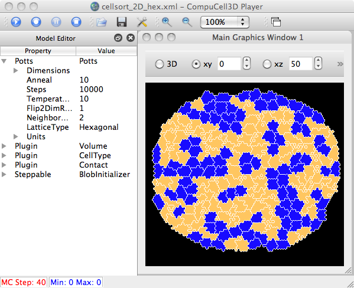

This was a feature request by Shane Hutson (March 2011) to display cluster borders, just as we display cell borders. It has been incorporated into 3.5.0 and will be put into 3.5.1. So, there is now an additional 'Visualization' menu item, 'Cluster Borders', which can be checked on/off and will be stored in the preferences.
Here is a snapshot of the edited files for this change:
Some testing...
heiland@Macintosh-91:~/dev/Glazier/cc3d-3.5-3-8-11$ compucell3d.sh -i ~/dev/Glazier/woundHealing_py_03_08_2011_15_01_18/LatticeData/StepLDF.dml CompuCell3D - version 3.5.0 ... currentDirectory= /Users/heiland/dev/Glazier/cc3d-3.5-3-8-11 self.__fileName= /Users/heiland/dev/Glazier/woundHealing_py_03_08_2011_15_01_18/LatticeData/StepLDF.dml created cmlFieldHandler= <CMLFieldHandler.CMLFieldHandler instance at 0x121266fc8> Load file /Users/heiland/dev/Glazier/woundHealing_py_03_08_2011_15_01_18/LatticeData/StepLDF.dml ... SIMTHREAD= <Simulation.CMLResultReader.CMLResultReader object at 0x12126ae20> playerType= CMLResultReplay ---- SimpleTabView.py: addVTKWindowToWorkspace ========= and it proceeds to display all saved .vtk files.
Currently we just hardwire the coloring of the cluster borders to white (in player/Graphics/MVCDrawView2D.py) - the user could edit/change this:
def drawClusterBorders2D(self):
self.clusterBorderActor.GetProperty().SetColor(1.0,1.0,1.0)
Since it's possible to change the color of the cell borders in the Prefs panel, this seemed like an acceptable hardwire. More flexibility will be possible in 3.5.1.
heiland@Macintosh-91:~/dev/Glazier/cc3d-3.5-3-8-11$ runScript.sh -i ../woundHealing.py ... --> (I guess .png's aren't dumped for runScript, but just .vtk's ?) heiland@Macintosh-91:~/dev/Glazier$ ll woundHealing_py_03_08_2011_15_24_40/ total 16808 -rw-r--r-- 1 heiland heiland 692 Mar 8 15:24 StepLDF.dml -rw-r--r-- 1 heiland heiland 320129 Mar 8 15:24 Step_00000.vtk -rw-r--r-- 1 heiland heiland 323647 Mar 8 15:24 Step_00001.vtk -rw-r--r-- 1 heiland heiland 325782 Mar 8 15:24 Step_00002.vtk -rw-r--r-- 1 heiland heiland 326883 Mar 8 15:24 Step_00003.vtk ...
It took a while to debug the hex cluster borders, but I eventually figured out the hex
lattice was incorrectly specified in the model, woundHealing-hex.py:
potts.ElementCC3D("Lattice",{},"Hexagonal")
and should have been:
potts.ElementCC3D("LatticeType",{},"Hexagonal")
And for the cellsort hex Demo, it seems the ClusterId = CellId:
